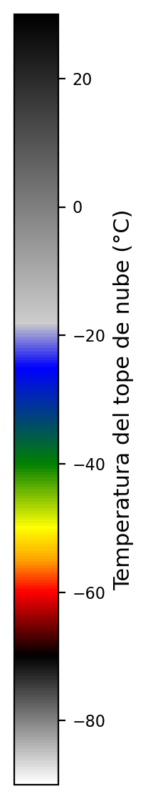

Capas
Selecciona el modelo
Selecciona el estado
Selecciona la variable
Fecha y hora
Activar o desactivar vectores de viento
Selecciona el estado
Selecciona la variable
Fecha y hora
Activar o desactivar vectores de viento
Cargando datos...
Tiempo 0 de 0

Selecciona el estado
Selecciona la banda
Selecciona la banda
Cargando imágenes...
Frame 0 de 0
Selecciona cuencas
Años disponibles
Ciclones
Años disponibles
Ciclones
Oceanografía
Aquí irán los datos oceanograficos como SST, Oleaje y demas.
Modelos Climáticos
Aquí irán los datos de modelos como el CFSv2, ECMWF Seasonal, etc...